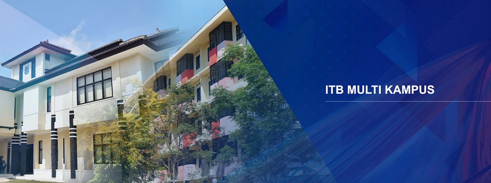
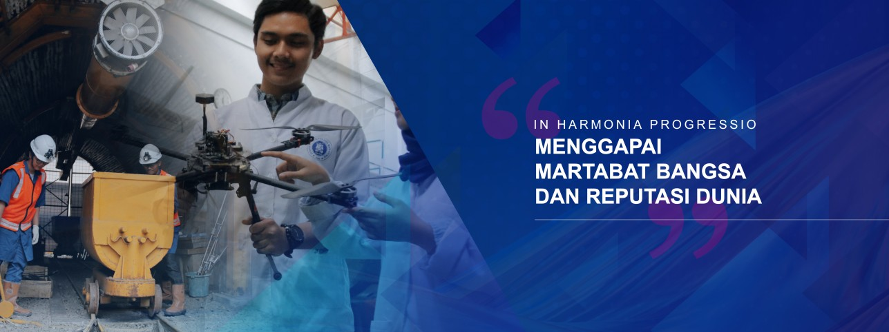
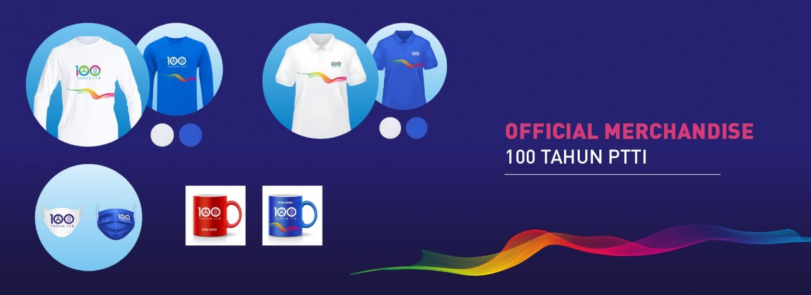

Dengan rasa bangga, saya sampaikan selamat kepada seluruh wisudawan pada prosesi Wisuda Pertama ITB TA 2020/2021. Gelar yang diraih merupakan hasil kerja keras, ketekunan dan keuletan selama menempuh studi di ITB, yang disertai dukungan dan doa dari keluarga dan kerabat. Dengan menyandang gelar tersebut, kini ada tanggung jawab baru, yaitu memberikan sumbangsih terbaik kepada masyarakat dan bangsa Indonesia.